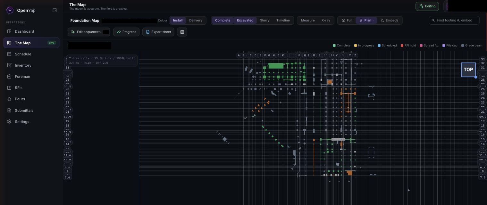
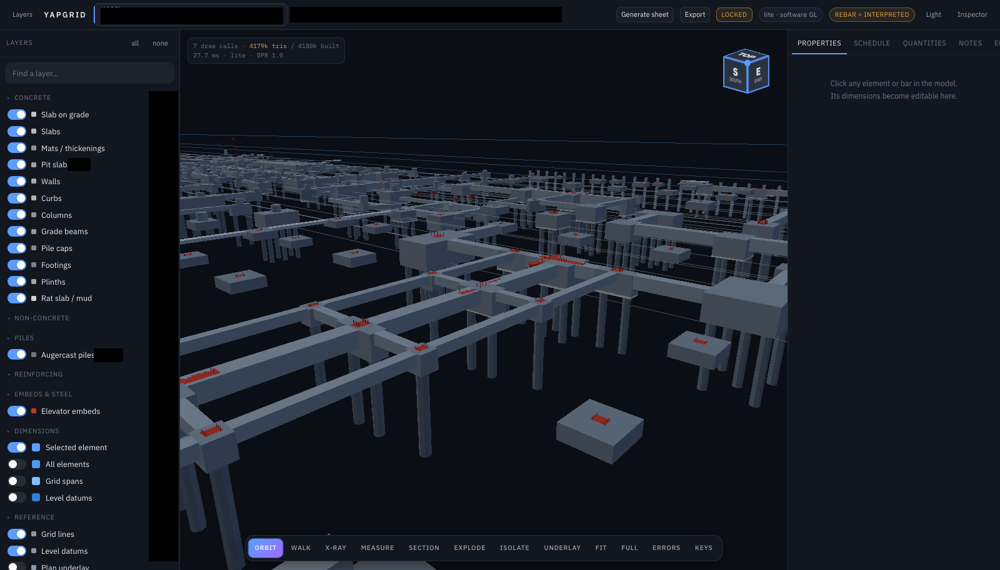
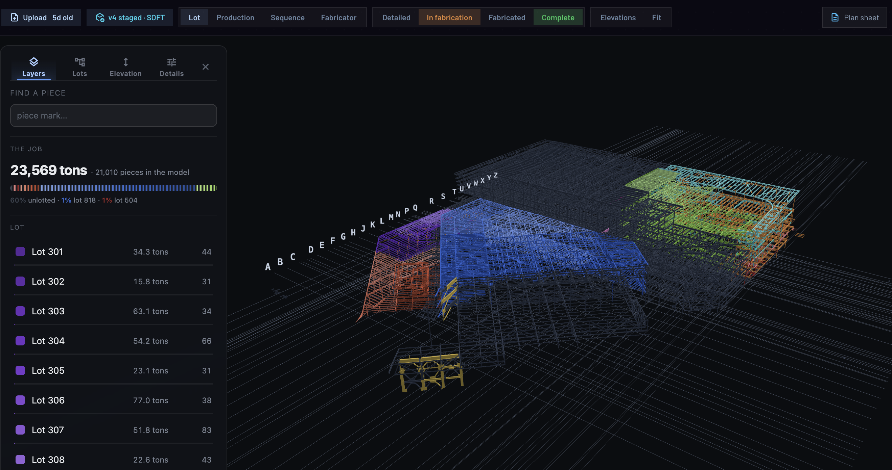
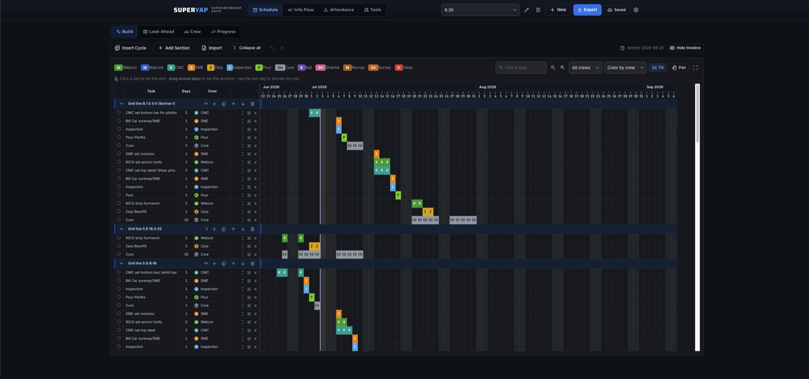
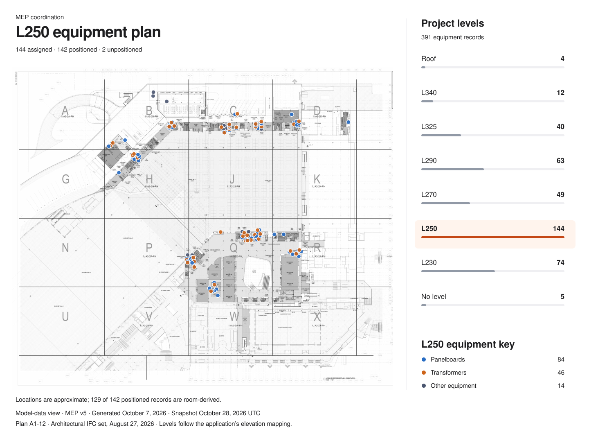
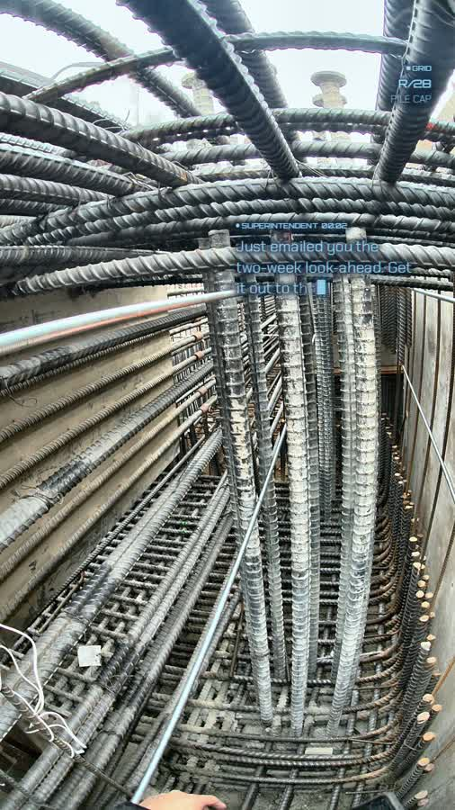

Model quantities
IFC geometry, levels, and model-derived quantities bring the building into a browser workspace. Rebar and embed coordination keep the details connected to the field.
OpenYap
Construction information should move with the project.
I build the tools to make that happen.

The command center
I built and deployed a full-stack construction application on a $2 billion project for quantity tracking, embed quality control, and steel receiving.
The workspace connects model geometry with the field records, quantities, and coordination that give it meaning. It grew from the tasks I handle as a project engineer.
Each workflow starts with a practical question
from the people doing the work.

IFC geometry, levels, and model-derived quantities bring the building into a browser workspace. Rebar and embed coordination keep the details connected to the field.
Steel receiving, electrical equipment, concrete, and tools need a shared view of what is there and what comes next.
Concrete break tracking, a drawing index, and a steel delivery pipeline notify teams when new data arrives.
Concrete quantities, excavation references,
embed counts, and drone imagery.
These examples use an archived August 2026 model selection and OpenYap’s sheet renderer. The PDFs retain selectable markups and switchable layers for Bluebeam. The drone image record is dated October 14, 2026.

693 selected foundation members, with editable volume markups and discipline layers.
Download layered PDF
Foundation footprint areas. Overlaps are not deducted; this is not excavated volume.
Download layered PDF
407 model embeds, represented by selectable polygons on a separate count layer.
Download layered PDF
A calibrated site image on its own layer, beneath the archived foundation model.
Download layered PDFModel-data examples, not current field-status records. Concrete examples select foundation members without openings.
Model-based tracking and trade sequencing.

OpenYap application capture, September 30, 2026.
A piece mark can appear in a model, an advance material list, and delivery paperwork. Seeing its location and fabrication lot in one view makes those records easier to reconcile.
The source archive contains 467 files, including 405 PDFs and 41 workbooks. That includes revisions and derived files. Separately, the archived steel model contains 23,179 assemblies across 13,876 marks.
Start with a mark, then find its model location and lot instead of searching drawings and lists separately.
Keep detailing, fabrication, shipping, and receiving distinct. A shipping record alone does not establish receipt on site.
Use the source records to resolve holds, missing delivery evidence, and discrepancies before the next coordination conversation.
Source archive inventoried November 1, 2026. Archive file counts and model quantities describe different datasets; they are not a count of files visualized. The benefit is less repeated lookup and reconciliation; time and cost savings have not been measured.

SuperYap, an earlier standalone scheduling application. Archived September 2026.

Model-data view from the published MEP v5 snapshot, October 28, 2026 UTC. Plan A1-12; positions are approximate and predominantly room-derived.
Implemented in the field
pieces of steel tracked
pieces of electrical equipment tracked
cubic yards of concrete tracked
tools tracked across projects
Scope tracked by the AI tools I’ve built and implemented, as reported in my October 31, 2026 résumé.
The evolution
Early pour maps, tool tracking, embed workflows, and schedules each solved a narrow problem. OpenYap brings that work into a connected workspace.
The point is practical: fewer handoffs, clearer context, and information that helps the next person do their job.
Beyond the code
I lead discussions with internal leadership, IT, Data, and Cybersecurity about scaling construction tools company-wide.
I also led the evaluation of an external AI vendor and recommended against adoption, saving $75,000. Good judgment includes knowing when another tool is not the answer.
Through Provectus AI consultation, I advise contractors with $2B–$6B in revenue on labor efficiency, inventory procurement, and immediate return on investment.
Where this could go
A concept film exploring my vision for connected construction.
Watch the film
Project inquiries